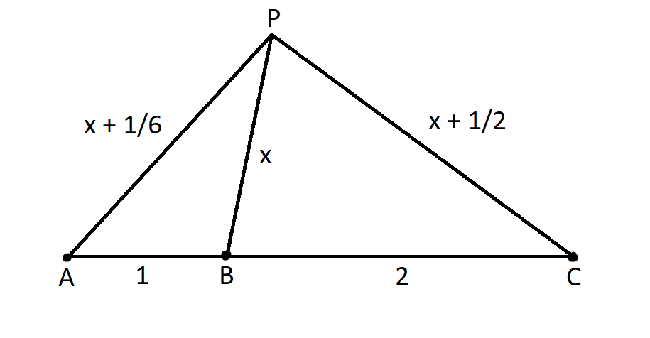
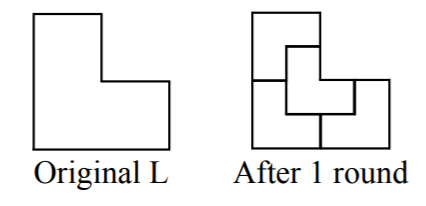

These are my solutions to the 2020 Euclid Contest by the University of Waterloo. Due to the coronavirus, the contest has been cancelled, and as of April 27, 2020, the contest problems have been released. This page is a formal write up for the solutions. It leads you directly to the solution but omits some of the work required to obtain the solution. For a playlist to video explanations that provide a step by step guide, click here.
In summary, this year's Euclid had very many algebra problems, and all the geometry problems in this contest were also algebra heavy. Problem nine was the most interesting one for me. The problem can be solved using a recurrence relation, and requires one to think outside of the box and create a closed form for this relation. The image above depicts the construction in the problem.
Problem 1
For all values of \(x \ne -2,\) \(3x + 6 \over x+2 \) \(=\) \(3(x+2) \over x+2\) \(=\) \(3.\) Hence, for \(x = 11,\) the value of the expression is \(3.\)
The slope of the line is \(7-5 \over 1-(-1)\) \(=1.\) Since the point \((-1, 5)\) exists on the line, then the point \((-1+1, 5+1) = (0, 6)\) must as well. Thus, the y-intercept is \(y = 6.\)
Equating the y-values of the first two lines, we obtain \(3x+7=x+9 \implies x=1.\) Substituting \(x\) inside the first equation yields \(y=10.\) Since the first two lines intersect at \((3, 10),\) so must the third line. Hence, \(m+17=10 \implies m=-7.\)
Problem 2
Let the three digits be \(a,\) \(b,\) and \(c\) respectively so that \(m=100a+10b+c.\) It is given that \(a=bc,\) and \(c\) is odd. Since the digits are distinct, \(c > 1\) and \(b > 1,\) because otherwise \(a = b\) or \(a = c.\) Now, since \(c\) is odd, \(c \geq 3\) and \(a \leq 9\) \(\implies bc \leq 9\) \(\implies 3b \leq 9\) \(\implies b = 2\) or \(b = 3.\) If \(b = 3,\) then the smallest value \(a\) can be is \(5,\) which is too large. Thus, \(b = 2,\) and \(bc \leq 9\) implies that \(c \leq 4.\) For odd values, the only possibility is \(c = 3.\) Finally, \(a = 2 * 3 = 6,\) and \(m = 623.\)
Initially, let there be \(g\) gold marbles and \(b\) black marbles. Then, \(b \over g\) \(=\) \(1 \over 4\) \(\implies 4b=g.\) Since there are \(100\) marbles, \(b + g = 100 \implies 5b = 100 \implies b=20.\) This means there are \(20\) black marbles and \(80\) gold marbles. Let the number of marbles that Eleanor add be \(x.\) Then, \(20 \over 80 + x\) \(=\) \(1 \over 6\) \(\implies x=40.\) Hence, she must add \(40\) gold marbles.
We can rewrite the expression as \(n + 1 + \)\(15 \over n.\) Since \(n + 1\) is an integer, all we need is for \(15 \over n\) to be an integer. Then \(n\) must be a divisor of \(15.\) For positive integers, we can have \(n=1, 3, 5, 15.\)
Problem 3

Note that triangles \(CDE\) and \(EFG\) are both isosceles right triangles. Hence, \(CD = 1\) and \(CE = GE = \sqrt2.\) Now, \(CEG\) is also an isosceles right triangle since \(CE = GE\) and \(\angle CEG = 180^\circ - 45^\circ - 45^\circ = 90^\circ.\)
\(BCG\) is another isosceles right triangle since \(\angle BCG = 180^\circ - \angle DCE - \angle ECG = 90^\circ,\) and \(\angle CBG = BGH = 45^\circ\) (\(AD\) and \(HF\) are parallel). Finally, \(BC = 2,\) and \(BD = BC + CD = 3\) metres.
| Step 1: | Add \(x\) and \(y.\) Let \(x\) equal the result. The value of \(y\) does not change. |
| Step 2: | Multiply \(x\) and \(y.\) Let \(x\) equal the result. The value of \(y\) does not change. |
| Step 3: | Add \(y\) and \(1.\) Let \(y\) equal the result. The value of \(x\) does not change. |
After each process, \(x\) becomes \(y(x+y)\) and \(y\) becomes \(y+1.\) Starting from \(x=24\) and \(y=3,\) we obtain \(x=3(24+3)=81\) and \(y=4.\) Repeat this process one more time to obtain the final value of \(x=4(81+4) = 340.\)
For a quadratic to have two distinct roots, its determinant must be positive. Hence \(6^2-4*k*k > 0 \implies k^2 < 9 \implies |k| < 3.\) The integer values of \(k\) are \(k = -2, -1, 1, 2.\)
Problem 4
Since \(a \over b\)\(< 1,\) \(b\) is larger than \(a,\) and \(b = a + 15.\) Breaking the inequality into two parts and substituting \(b,\) we obtain \(5 \over 9\) \(<\)\(a \over a + 15\) \(\implies a >\) \(75 \over 4\) \(\implies a \geq 19,\) and \(a \over a+15\) \(<\) \(4 \over 7\) \(\implies a < 20.\) Hence \(a = 19\) and \(b = 19 + 15 = 34.\) Then \(a \over b\) \(=\) \(19 \over 34.\)
From the statement, the ratio that must hold is \(10*(\frac 12)^5\over 10*(\frac 12)^3\) \(= \frac 14 =\) \(10+5d\over 10+3d\) \(\implies d = -\) \(30\over 17.\)
Problem 5
First, there are \(2\) primes between \(20\) and \(30,\) so \(f(20) = 2.\) Then \(f(f(20)) = f(2).\) There are \(5\) primes between \(2\) and \(12\) inclusive, hence, \(f(2) = 5.\) Thus, \(f(f(20)) = 5.\)
For the first equation, either \(x = 1\) or \(y = 2.\) If \(x = 1,\) then in the second equation, since \(x \ne 3,\) \(z = -2.\) Substituting \(x\) and \(z\) in the third equation yields \(y = -4.\)
If \(y = 2\) in the first equation, then either \(x = 3\) or \(z = -2\) in the second equation. If \(x = 3,\) then substitution yields \(z=3.\) If \(z = -2,\) then \(x = 13.\) Thus the triples are \((1, -4, -2),\) \((3, 2, 3),\) and \((13, 2, -2).\)
Problem 6

First, \(ST = 2r,\) \(AS = r,\) and \(BT = 6 - r.\) Now, let \(G\) be the point on \(BC\) such that \(SG\) is perpendicular to \(BC.\) Now, \(GT = BT - BG = BT - AS = 6 - 2r.\) By pythagorean theorem in triangle \(SGT,\) \(4^2 + (6-2r)^2 = (2r)^2 \implies r=\) \(13 \over 6.\)

Triangle \(ABE\) is a right isosceles triangle, so \(\angle ABE = 45^\circ ,\) and \(BCD\) is a \(30^\circ - 60^\circ - 90^\circ\) triangle, with \(\angle CBD = 30^\circ.\) Now, \(\angle EBD = 135^\circ - 45^\circ - 30^\circ = 60^\circ,\) and \(BE = AB\sqrt 2 = 14.\)
By law of cosines in triangle \(EBD,\) \((8x-6)^2 = 14^2 + (8x)^2 - 2(14)(8x) * \cos(60^\circ)\) \(\implies x = 10.\)
Problem 7
Since \(g(g^{-1}(x)) = x = 2g^{-1}(x) - 4,\) we have \(g^{-1}(x) = \frac{x+4}2.\) Now, \(g(f(\frac{x+4}2)) = 2f(\frac{x+4}2)-4 = 2x^2 + 16x + 26\) \(\implies f(\frac{x+4}2) = x^2 + 8x + 15.\)
We can use the substitution \(\pi = \frac{x+4}2\) to obtain \(f(\pi) = (2\pi - 4)^2 + 8(2\pi - 4) + 15\) \(=4\pi ^2 - 1.\)
Exponentiate both side with base two to obtain the equations, $$\sin x \cos y = \frac 1{2 \sqrt2}$$ $$\frac{\sin x}{\cos y} = \sqrt2$$ Multiply these together to get \(\sin^2 x = \frac12,\) and since \(\sin x \geq 0\) for \(0^\circ \leq x < 180^\circ,\) the only possibility is \(\sin x = \frac1{\sqrt2} \implies x = 45^\circ\) or \(x = 135^\circ.\) Substitute \(\sin x\) back into one of the equations to get \(\cos y = 1/2 \implies y = 60^\circ.\) The pairs are \((45^\circ, 60^\circ),\) \((135^\circ, 60^\circ).\)
Problem 8
There are three different matchings from the start, so the probability that Bianca is matched against any given player is \(\frac13.\) Split this problem into two cases:
Case 1: Bianca is against Dave first. The probability that she is matched against Dave is \(\frac13,\) and the probability she wins against Dave is \(1-p.\) Next, the probability that she wins her second match is \(\frac12.\) The overall probability here is \(\frac13 * (1-p) * \frac12 = \frac{1-p}6.\)
Case 2: Biance is matched with another person first. The probability of the matching is \(\frac23\) and the probability that she wins is \(\frac12.\) After the first game, she is matched with Dave if Dave wins with a probability of \(p,\) and matched with another person with probability \(1-p.\) If she is matched with Dave, the probability that she wins is \(1-p,\) and otherwise it is \(\frac12.\) The overall probability in this case is \(\frac23 * \frac12 * (p(1-p) + \frac12(1-p)) = \frac{-2p^2+p+1}6.\)
The answer to this problem is the sum of the two cases, \(\frac{-p^2+1}3.\)

See the diagram above. Let \(PB = x.\) Since \(A\) receives the sound \(\frac12\) seconds after \(B,\) \(PB = x + \frac12 * \frac13 = x + \frac16.\) \(C\) receives the sound \(1\) second after \(A,\) so \(PC = x + \frac16 + 1 * \frac13 = x + \frac12.\) Now we can use a system of equations with law of cosines to find the value of \(x.\) First, let \(y = \cos(\angle PBC),\) then \(\cos(\angle PBA) = \cos(180^\circ - \angle PBC)\) \(= -\cos(\angle PBC) = -y.\) Using law of cosines in triangles \(PBA\) and \(PBC,\) we obtain the following system of equations: $$ \begin{matrix} (1) & (x+\frac16)^2 = x^2 + 1 + 2xy \\ (2) & (x+\frac12)^2 = x^2 + 4 - 4xy \\ \end{matrix} $$ Multiplying \((1)\) by 2, and adding it with \((2),\) we get the equation \(2(x+\frac16)^2 + (x+\frac12)^2 = 3x^2 + 6.\) The only solution here is \(x = \frac{41}{12}.\) Thus \(P\) is \(\frac{41}{12}\) km from \(B.\)
Problem 9

Let there be \(\ell_i\) L's after \(i\) rounds. First, there is initially one L, so \(\ell_0 = 1.\) After each round, each L of the smallest size makes four other L's of the new smallest size. Hence, \(\ell_{i+1} = 4\ell_i.\) Then, \(\ell_i = 4^1*\ell_{i-1} = 4^2*\ell_{i-2} = ... = 4^i*\ell_0 = 4^i.\) Now, \(\ell_3 = 4^3 = 64,\) hence there are \(64\) L's after 3 rounds.
After \(i\) rounds, let \(a_i\) be the number of L's with the same orientation as the original L, \(b_i,\) \(c_i,\) \(d_i\) be the number of L's that are the same orientation as the L that is rotated \(90^\circ,\) \(180^\circ,\) \(270^\circ\) clockwise resepctively. Note that after each round, each L produces \(2\) smaller L's of the same orientation, one L that is rotated \(90^\circ\) clockwise, and one L that is rotated \(90^\circ\) counter-clockwise. Using this fact, we can create a recurrence for each variable.
After each round, an L of a specific orientation is created twice by the L of the same orientation, and once by each the L rotated \(90^\circ\) clockwise, and \(90^\circ\) counter-clockwise. Hence, $$ \begin{matrix} a_{i+1} = 2a_i + b_i + d_i \\ b_{i+1} = 2b_i + c_i + a_i \\ c_{i+1} = 2c_i + d_i + b_i \\ d_{i+1} = 2d_i + a_i + c_i \\ \end{matrix} $$ Now we can use a table of values to compute \(a_3.\) Since there is only one L from the start, \(a_0 = 1,\) and \(b_0 = c_0 = d_0 = 0.\) \begin{array} {|r|r|}\hline & i = 0 & i=1 & i=2 & i=3 \\ \hline a_i & 1 & 2 & 6 & 20 \\ \hline b_i & 0 & 1 & 4 & 16 \\ \hline c_i & 0 & 0 & 2 & 12 \\ \hline d_i & 0 & 1 & 4 & 16 \\ \hline \end{array} Since \(a_3 = 20,\) after three rounds, there are \(20\) L's with the same orientation as the original L.
First, we prove that \(b_i = d_i = 4^{i - 1}\) for all integers \(i \geq 1 .\) This holds true for the base case, \(i = 1,\) and now we prove by induction that it holds true for \(i + 1\) as well. Notice that \(a_i + b_i + c_i + d_i = \ell_i = 4^i,\) since the sum of L's of each type equals the total number of L's. Now, use the initial assumption that \(b_i = d_i = 4^{i - 1}\) to obtain that \(a_i + c_i = 2 * 4^{i - 1}.\) Replace \(a_i + c_i = 2 * 4^{i - 1}\) and \(b_i = 4^{i - 1}\) inside the recurrence \(b_{i+1} = 2b_i + c_i + a_i\) to obtain \(b_{i + 1} = 4^i.\) Similar steps apply for \(d_{i + 1}.\) This proves the statement by induction.
Now, we prove that \(a_i = 4^{i - 1} + 2^{i - 1}\) for all integers \(i \geq 1\) by induction as well. First, this holds true for \(i = 1,\) as \(a_1 = 2^0 + 4^0 = 2.\) Replace \(b_i = d_i = 4^{i-1}\) and \(a_i = 4^{i - 1} + 2^{i - 1}\) inside the recurrence \(a_{i+1} = 2a_i + b_i + d_i\) to obtain \(a_{i+1} = 4^i + 2^i.\) The proof is now complete.
Finally, \(a_{2020} = 4^{2019} + 2^{2019},\) hence there are \(4^{2019} + 2^{2019}\) triangles with the same orientation as the original L after 2020 rounds of subdivisions.
Problem 10
The sum of the two smallest elements in the list must yield the smallest sum, and the sum of the two largest elements must yield the largest sum. So, \(a_1 + a_2 = s_1 = 8,\) and \(a_3 + a_4 = s_6 = 208.\)
Now the sum of the smallest element and the third smallest element must be the second smallest sum. This is true since for any other sum \(a_m + a_n,\) we can choose a pair \((m, n)\) with \((m < n).\) For any pair not equal to \((1, 2)\) and \((1, 3),\) we have \(m \geq 1\) and \(n \geq 3,\) with one of the equalities \(m > 1\) and \(n > 3\) holding true. Hence \(a_m + a_n > a_1 + a_3.\)
By similar reasoning, the sum of the largest and third largest element must be the second largest sum. Now we have the other two equations, \(a_1 + a_3 = s_2 = 104\) and \(a_2 + a_4 = s_5 = 112.\) Now there are two cases for the remaining two sums, \(s_3\) and \(s_4\):
Case 1: \(a_1 + a_4 = 106\) and \(a_2 + a_3 = 110.\)
Then, \((a_1 + a_4) + (a_1 + a_3) - (a_3 + a_4)\) \(= 2a_1 = 106 + 104 - 208 = 2 \implies a_1 = 1.\) Thus one possible list is: \(a_1 = 1,\) \(a_2 = 7,\) \(a_3 = 103,\) \(a_4 = 105.\)
Case 2: \(a_1 + a_4 = 110\) and \(a_2 + a_3 = 106.\)
Using the same method as the previous case, \(2a_1 = 110 + 104 - 208 = 6 \implies a_1 = 3.\) The second possible list is: \(a_1 = 3,\) \(a_2 = 5,\) \(a_3 = 101,\) \(a_4 = 107.\) It is easy to verify that both lists work.
Once again, \(a_1 + a_2 = s_1,\) \(a_1 + a_3 = s_2,\) \(a_3 + a_5 = s_9,\) and \(a_4 + a_5 = s_{10}.\) Now, each number in the list appears four times in the sum, hence, \(4(a_1 + a_2 + a_3 + a_4 + a_5) = \sum\limits_{i = 1}^{10} s_i\) \(\implies\) \(a_1 + a_2 + a_3 + a_4 + a_5 = a_3 + s_1 + s_{10}\) \(= \frac{\sum\limits_{i = 1}^{10} s_i}4\) \(\implies a_3 = \frac{\sum\limits_{i = 1}^{10} s_i}4 - s_1 - s_{10}.\) Therefore, it is possible to determine \(a_3\) based off of the values of \(s.\) Then it is also possible to determine \(a_1 = s_2 - a_3,\) and \(a_5 = s_9 - a_3.\) Finally \(a_2 = s_1 - a_1\) and \(a_4 = s_{10} - a_5.\) Since there is only one way to determine all the values of \(a,\) there is one possibility for the list.
We can use a recursive process to generate two lists of size \(2n\), from two lists of size \(n\), with both pairs of lists satisfying the above property. From lists \(a_1, a_2, ..., a_n\) and \(b_1, b_2, ..., b_n\) with the same pairwise sums, we can generate two new lists, \(a_1, a_2, ..., a_n, b_1 + x, b_2 + x, ..., b_n + x\) and \(b_1, b_2, ..., b_n, a_1 + x, a_2 + x, ..., a_n + x\), from a fixed constant \(x \ne 0\), which will also have the same pairwise sums. Thus we can start with a simple case, for example \(n = 2,\) and the lists \(1, 4\), and \(2, 3\), where the elements sum to \(5\). Then, we can set \(x = 1\), and construct the case for \(n = 4\), which are the lists \(1, 3, 4, 4\) and \(2, 2, 3, 5\). Repeat the process two more times to construct the case \(n = 16\). Note that the these two lists will be distinct, since the maximum value of both lists are different from the start, and they both increase by one and interchange between lists each time the process is applied, so the maximum values will be different when \(n = 16\) as well.